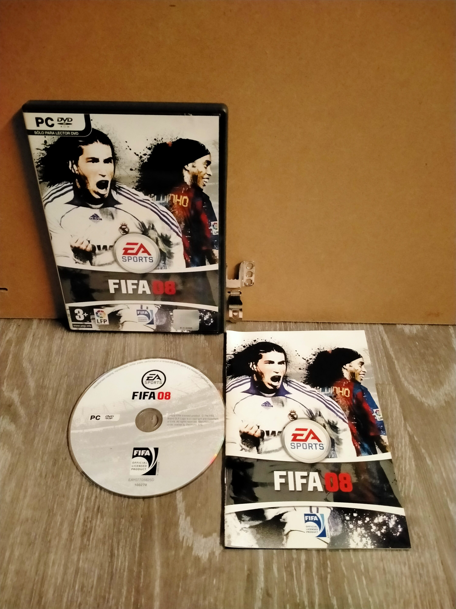

Ficha #000000
FIFA 08
Entrega de 2007 de la longeva saga futbolística de Electronic Arts. FIFA 08 introdujo mejoras importantes en el control del balón y en la inteligencia artificial de los jugadores, ofreciendo partidos más fluidos y realistas. Incluye más de 30 ligas oficiales, cientos de equipos licenciados y estadios reales, además de modos de juego como Carrera, torneos personalizados y multijugador. La edición para PC utiliza el motor de juego clásico de la serie anterior a la transición completa al motor de nueva generación que llegaría en años posteriores.
- Formato
- DVD Case
- Plataforma
- WinXP Windows Vista
- Género
- Deportes Fútbol Simulación
- Serie
- Todos DVD Case EA Sports
- Desarrollador
- EA Canada
- Distribuidor
- Electronic Arts
- EAN
- —
Contenido de la edición
- Pendiente de documentación.
Preservación
- Protección
- No determinado
- Formato recomendado
- No aplica
- Jugable en virtualización
- No determinado
Pendiente de documentación